GDN/KDA 在具体模型中怎样与 full attention、MoE 和残差结构组合，见 DeepSeek、Kimi 与 Qwen 架构。
第 2–3 节沿 shape 推导基础状态。第 6–7 节用逐行操作解释 GLA/GDN。第 11 节将这些公式对应到 Qwen3.5 的 Conv1d、SSM state 与输出 gate。
1. FlashAttention、linear attention 与 FLA 的关系
Flash Linear Attention（FLA）把可递推的序列计算组织成适合 GPU 的 kernel。理解它需要区分数学公式、计算算法和软件库：
| 名称 | 所在层次 | 核心作用 |
|---|---|---|
| softmax attention | 数学结构 | 当前 Q 对历史 K 打分，再对 V 加权求和 |
| FlashAttention 1–4 | softmax attention 的高效算法与实现 | 分块、online softmax、重计算和流水线，减少中间量访存 |
| linear attention | 一类序列混合结构 | 利用可结合的计算或状态更新，避免逐个访问全部历史 KV |
| FlashLinearAttention 算法 | 硬件友好的计算组织 | 用 chunk、矩阵乘法和状态传递高效计算 linear attention |
flash-linear-attention / fla |
软件项目与 Python 命名空间 | 提供 kernels、layers、models 和融合模块 |
“FlashLinearAttention”在 GLA 论文中指高效计算算法，现在也用于项目名称。当前 FLA 项目覆盖的范围已扩展到多类线性递推、状态空间模型、稀疏注意力和混合模型。不能认为库内所有操作都使用同一个公式。
FlashAttention 保持 softmax attention 的数学目标。linear attention 通常更换相似度函数或状态更新规则。直接替换一个训练好的 softmax 模型中的算子，不能保证输出等价。是否能转换、蒸馏或重新训练，是模型层面的工作。GLA 论文、FLA 官方项目
本页接在 FlashAttention 1–4 后阅读。先推导不带 gate 的形式，再加入遗忘与 delta update，最后对应到库接口和 GPU 执行。
2. 从 softmax 权重到可结合的矩阵乘法
固定符号与形状
先省略 batch/head。q、k、v 都写成行向量，t 表示 token 位置，序列长度为 T：
| 对象 | 形状 | 含义 |
|---|---|---|
| 原始 \(q_t,k_t\) | \([1,d]\) | 投影后的 query/key |
| \(\bar q_t=\phi(q_t),\bar k_t=\phi(k_t)\) | \([1,r]\) | feature map 后的向量，r 不一定等于 d |
| \(v_t\) | \([1,d_v]\) | value 向量 |
| \(S_t\) | \([r,d_v]\) | 保存历史 key-value 关联的矩阵状态 |
| \(z_t\) | \([r,1]\) | 归一化分母需要的向量状态 |
| \(o_t\) | \([1,d_v]\) | 当前 token 输出 |
标准 causal softmax attention 的权重与 \(\exp(q_tk_i^T/\sqrt d)\) 成正比。一个常见的 normalized linear attention 改用非负 feature map 的内积：
分母需要大于 0；具体实现可能加 epsilon 或限制 feature map。ELU(x)+1 是一种示例，并不是所有 linear attention 都使用它。
把与当前 query 无关的历史部分先合并
利用矩阵乘法的结合律：
每个 \(\bar k_i^Tv_i\) 是 [r,dv] 外积。因此只要保留历史外积之和 S，就能对新 query 读取历史贡献。
没有 causal mask 时，这个变换也可写成：
左边先生成 [T,T] 的关系矩阵；右边先计算 [r,dv] 的状态。它们对同一个点积核等价，但不能将 softmax(Q @ K.T) @ V 直接替换成 Q @ (K.T @ V)：softmax 不能被这样移动。有限维 feature map 也不自动等于原来的指数核。Linear Transformers 原论文
这里“linear”主要指固定特征维度下，对序列长度 T 的计算规模。投影、feature map、门控和归一化仍可包含非线性，整个模型并非线性函数。
3. causal attention 的递推状态
初始状态 \(S_0=0,z_0=0\)。每到一个 token：
先更新再读取表示当前 token 可以看到自己，即 i <= t。若改成读取旧状态后再写入，语义就变成排除当前 token，不能随意交换。
写入与读取，分别作用在哪个维度
S 可以看成 r 个内容向量，每行长度为 dv。当前 key 的第 a 个分量，决定 value 对这一行贡献多少：
这里 \(\bar k_t[a]\) 是一个标量，v 是完整的 [1,dv] 内容。它就是外积 k.T @ v 的逐行含义，不需要构造另一张复杂矩阵来理解。
读取时，q 按自己的特征权重组合这些行：
| 步骤 | 形状变化 | 含义 |
|---|---|---|
k.T @ v |
[r,1] @ [1,dv] → [r,dv] |
用 key 特征将内容写进各行 |
q @ S |
[1,r] @ [r,dv] → [1,dv] |
用 query 特征组合各行内容 |
q @ z |
[1,r] @ [r,1] → [1,1] |
求这次查询对应的总匹配权重 |
| 分子除以分母 | [1,dv] / [1,1] |
归一化当前输出 |
S 的行表示 key 特征，列表示 value 内容。它与 [T,T] 的 attention score 矩阵不同，没有历史位置轴。历史位置已经通过求和合并，不能从 S 中按位置取回原始 KV。不同历史可能产生相同状态，这是固定容量记忆的表达能力取舍。
S、z 是每个请求随 token 更新的运行时状态，不是训练结束后固定不变的投影权重。
4. 状态大小、计算量与性能边界
下表只比较单个 head 的序列混合，不含 QKV/output Linear 和 FFN：
| 指标 | dense softmax attention | 简单 linear attention |
|---|---|---|
| prefill 的主要计算规模 | \(O(T^2(d+d_v))\) | 递推形式 \(O(Trd_v)\) |
| decode 生成一个 token | 访问长度为 T 的历史 KV | 更新和读取固定大小状态，约 \(O(rd_v)\) |
| 推理历史存储 | \(O(T(d+d_v))\) | S 为 \(O(rd_v)\)，normalized 形式还需 z |
| 历史表示 | 保留每个位置的 K/V | 合并到有限维状态 |
以 T=8192, d=r=dv=128 为例：BF16 KV cache 每 head 占 4 MiB；FP32 S 占 64 KiB，FP32 z 再占 512 bytes。这里明确区分存储精度，不能把这个比例直接推广到不同 head 数、GQA 或混合模型。
固定大小状态也有搬运成本。假设一次 recurrent decode 从 HBM 读入 FP32 S，更新后写回：状态读写约为 \(8rd_v\) bytes。外积累加和 query-state 乘法约为 \(4rd_v\) FLOPs，忽略较小项时，算术强度约为 0.5 FLOP/byte。
因此 recurrent kernel 仍可能受带宽、启动延迟或并行度限制。优势是成本不再随着历史 T 持续增长；不是状态计算没有开销。若在一次 kernel 中处理多个 token，并让状态留在片上，访存摊销又会不同。
“固定状态”限定 recurrent 层的推理缓存。训练的输入激活、反向所需信息和 chunk 边界状态仍随 T 增长。混合模型中的 softmax 层仍保留各自 KV cache，短卷积也可能保存额外状态。
5. 为什么需要 FlashLinearAttention：递推不等于硬件高效
逐 token 的递推只做外积和矩阵向量乘法，形状小，且 \(S_t\) 依赖 \(S_{t-1}\)。如果每个 token 都启动 kernel、读写完整 S，会增加启动和访存开销。虽然理论计算量是线性的，GPU 却可能缺少大矩阵运算和独立工作。
prefill 和训练已知整段输入，可以按 chunk 处理。用长度 L 的块交换两类成本：增加块内并行矩阵乘法，减少逐 token 状态访问。
不带 gate 的 chunkwise 公式
先看未归一化输出，令 Q、K 已完成所需 feature map。当前 chunk 的形状为：
Qc：[L,r] Kc：[L,r] Vc：[L,dv] S_in：[r,dv] S_out：[r,dv]
令 \(M_L\) 为包含对角线的下三角 0/1 mask。它与 softmax 中使用的 0/-inf 加法 mask 不同。
两项有明确分工：
- \(Q_cS_{\mathrm{in}}\)：每个 query 读取所有更早 chunk 的历史摘要。
- \(((Q_cK_c^T)\odot M_L)V_c\)：当前 chunk 内，只读取自己及之前 token 的贡献。
归一化形式还需要：
最后将 Uc 的每一行除以 dc 对应元素。只使用整个序列最终的 S、z 去计算全部 causal 输出会泄漏未来信息；chunk 必须拿到自己的入站状态。

有 L×L 计算，为什么仍称为线性
一共有约 T/L 个 chunk。每块的 L×L 工作，总规模是 \(O(TL(r+d_v))\)；加上状态读写相关乘法，总规模约为：
当 r、dv、L 固定时，它对 T 是线性的。若直接令 L=T，块内计算又变成二次规模。L 需要权衡矩阵效率、片上资源、边界状态流量和数值稳定性。
chunk 之间怎样并行
简单加法更新中，每块的增量 \(K_c^TV_c\) 可以独立计算；各块入站状态来自这些增量的前缀和。实现可以使用串行状态传递，也可以构造 parallel scan。选择取决于工作量与状态搬运成本，不能把“线性 attention”理解为所有 chunk 天然独立。
GLA 论文进一步分析带 gate 的 block-parallel 与二级分块，让更多工作使用 Tensor Core，并控制状态物化与数值范围。这是 FlashLinearAttention 的主要系统动机。GLA 的硬件分析与分块算法
6. GLA：让模型决定忘掉哪些历史
简单加法状态会不断累积历史。GLA 加入数据依赖的遗忘 gate。下面采用只沿 key 特征方向衰减的形式，暂不使用前面的 normalized 分母：
\(a_t\) 有 r 个元素，每个通常在 0 到 1 之间。每行先乘自己的保留系数，再加当前内容。按本文行向量约定，a 为 [1,r]，代码为 a.T * S_prev + k.T @ v。
论文的 diag(a) @ S_prev 表示同一个逐行缩放。它只是另一种记号，不要求实际构造对角矩阵。这里削弱的是一行中混合起来的旧内容，不是精确删除某个历史 token。GLA 的新写入仍是 value 本身，没有先检查旧状态对当前 key 已经记住了什么。
| gate | 对旧状态的影响 |
|---|---|
| 接近 1 | 保留对应 key 特征方向的历史 |
| 接近 0 | 衰减对应方向的历史 |
| 不同位置取不同值 | 按当前输入选择遗忘，而不是所有历史固定同速衰减 |
输出 gate 还可能在状态读取后缩放结果。状态遗忘 gate 和输出 gate 作用的位置不同。 层内也可能接 RMSNorm、短卷积和 output projection，因此 kernel 的 q @ S 不等于整个模型层。
normalized linear attention 与 GLA 不必共用分母
第 2–3 节的非负核使用 z 归一化。以 GLA、DeltaNet 为例，它们的常用序列混合形式，可以直接读取矩阵状态，再由层中的 norm/gating 调整数值。它们不一定维护 z，也不保证输出是 V 的凸组合。不能给所有 FLA 算子统一加上 q @ z 分母。
gate 的乘积与 log-space
将递推展开，较早位置 i 的写入会乘上后续的遗忘系数：
这里省略初始状态的贡献。连续相乘会造成下溢；直接构造累计乘积及其倒数，也可能引入数值问题。实现通常保存 g = log(a)，通过局部 cumsum 和指数恢复所需衰减比。
当前 GLA 接口中的 g 是 log gate，不是原始 gate logits，也不是 0 到 1 的 a。层实现使用 logsigmoid 和归一化因子生成 g；内核还会做适合 exp2 的底数转换。论文的二级分块同时服务于数值范围和矩阵乘法效率。GLA 层实现、GLA chunk kernel
7. DeltaNet 与 Gated DeltaNet：按预测误差写入
DeltaNet 的读取、比较、修正
固定本文的 [r,dv] 状态方向，DeltaNet 可写为：
先用当前 key 读出旧状态对 value 的预测，再写入预测误差。相较不断追加同一 key 的内容，它提供了修正已有关联的机制。key 归一化和 beta 范围会影响稳定性，具体模型必须遵守自己的约定。
这里使用 K 读取，是为了检查准备写入的这个关联；最终使用 Q 读取，才是生成当前输出。v 是当前输入产生的内容向量，不是外部监督标签。
| 中间量 | shape | 含义 |
|---|---|---|
predicted_v = k @ S_prev |
[1,dv] |
当前 key 在旧状态中读出的内容 |
error = v - predicted_v |
[1,dv] |
新内容与旧预测的差 |
beta * k.T @ error |
[r,dv] |
沿当前 key 方向写入的修正 |
若 k 是单位范数行向量，更新后对同一 key 的读取满足 \(k_tS_t=(1-\beta_t)\hat v_t+\beta_tv_t\)。它把旧预测移向新内容。对其他 q 的影响为 \(\beta_t(qk_t^T)e_t\)，因此相似关联也可能受影响，不是互不干扰的数据库记录。
加入遗忘：Gated DeltaNet
用标量 \(\alpha_t\) 先衰减旧状态，再进行 delta 更新：
不使用矩阵变换记号，计算顺序就是：
# 单个 head 的语义片段：q/k [1,r]，v [1,dv]，S [r,dv]。 # alpha、beta 是当前 token、当前 head 的标量。 decayed_S = alpha * S predicted_v = k @ decayed_S error = v - predicted_v S = decayed_S + beta * (k.T @ error) out = q @ S
必须从衰减后的状态读取预测；衰减状态却用未衰减状态计算误差，会得到另一条更新规则。
alpha 控制旧记忆整体保留多少，beta 控制当前 key 的修正强度。FLA 也实现了更细粒度的门控变体，但不能把 scalar gate 的公式直接套到每个变体。DeltaNet 原论文、Gated DeltaNet 原论文
多头意味着多份状态，gate 也按 head 区分
最简单的多头版本中，每个 head 有自己的 Q/K/V 和 S。单步 decode 的逻辑形状为：
| 对象 | shape |
|---|---|
| q、k | [B,H,1,r] |
| v、输出 | [B,H,1,dv] |
| S | [B,H,r,dv] |
| GLA 逐行遗忘门 | [B,H,r,1]，便于广播 |
| 基础 GDN 的 alpha、beta | [B,H,1,1]，每个 head 各一个标量 |
不同 heads 独立更新状态，输出合并为 [B,1,H*dv] 后再投影回 hidden。状态元素数为 H*r*dv：固定每 head 维度时随 H 增长；若固定总宽度且 r=dv=D/H，则为 D²/H。改变 heads 同时改变了每份记忆的大小，不能只看 H 判断容量。
具体模型允许 Q/K heads 和 V/state heads 数不同。若两个 heads 共享 k、但 v 不同，k.T @ v 的更新仍不同，通常需要各自的状态。下面的 Qwen3.5 就采用这种分组。
delta 更新为什么需要另一套分块算法
DeltaNet 的写入依赖当前状态，不能用普通加法的 S_out = S_in + K.T @ V 代替。将其写成 \(S_t=A_tS_{t-1}+B_t\) 后，多个更新可以按顺序组合：
组合满足结合律，但通常不能交换顺序。直接物化、相乘所有 r×r 矩阵可能很贵。实际算法利用低秩更新结构和紧凑表示，再转换成 chunk 级乘法或三角依赖计算。DeltaNet 的 WY 表示和 Gated DeltaNet 的分块变换解决的是这个问题；不是让时间依赖消失。
8. 映射到 GPU：prefill、decode 与 backward 各有分工
recurrent decode
单步 decode 可按 batch、head 和状态的 value tiles 分配工作。S 的子块分布在线程寄存器中，线程做状态更新、点积和必要的归约。是否采用 shared memory、分多少 warp，应由实际 kernel 的 layout 和配置确定。
以一个 FP32 [128,128] 状态为例，它有 16384 个元素。若概念上均分给 128 个线程，仅状态就相当于每线程 128 个 32-bit registers，尚未计入临时值。状态固定大小不表示寄存器压力小；实现可能切 value 维、改变 warp 数或重新组织归约。这个算例是资源预算，不是 FLA 所有 kernel 的实际配置。
chunk prefill / training
chunk 路径将 Q/K/V tiles 放入适合矩阵指令的布局，执行状态更新、历史读取和块内关系计算。相邻线程/warp 的合作服务于数据复用、归约与矩阵指令。不能只看公式里的一个外积就断定 kernel 全部使用 CUDA Core。
一个逻辑 chunk 可以拆成多个 Triton programs 和多个 kernels；一个 program 也可能循环处理多个 chunk。chunk 是算法单位，CTA/program 是执行单位，不应建立固定的一一对应。
backward 与重计算
状态更新会把后续 token 的梯度传回先前状态。带 gate 的反向还需计算 gate 梯度，因此输入、状态和临时量的保存策略影响训练显存。
FLA 的相应 chunk 路径保存或重算边界状态，按需重建局部中间量，并从后往前传播状态梯度。仅保存最终推理状态不够完成所有训练梯度；Python 循环加 autograd 也不会自动获得定制 backward 的内存收益。
与 Ampere / Hopper / Blackwell 的关系
这些 GPU 的矩阵指令、异步搬运和片上存储可以影响具体 kernel，但 FLA 不是对应某一代 Tensor Core 的指令名称。项目有多种 backend；使用 Triton 也不保证一定生成 TMA、WGMMA 或 tcgen05。确认实际路径需看版本、dispatch、生成代码和 profiler。
较少 FLOPs 不一定换来较低延迟。短序列的 softmax GEMM 可能已有很高利用率，而 recurrent 状态传递可能受带宽与串行依赖限制。比较速度还必须报告模型质量、长度、batch、dtype、状态维度和训练/推理阶段。不能把不同数学结构的结果仅按 kernel 耗时排列。
9. FLA 软件栈与一次调用的执行路径
本文核对快照为 b0de6fc886300ef99b019591cd67abca3f77527b，日期为 2026-10-28。下面的路径和接口针对这个版本，后续更新应重新核对。
| 层次 | 入口 | 职责 |
|---|---|---|
| 完整模型 | fla.models |
block、FFN、归一化、LM head、生成与 cache 接口 |
| 序列混合层 | fla.layers |
投影、gate、可选短卷积、kernel 选择与输出处理 |
| 核心算子 | fla.ops |
接收 q/k/v、gate 和 initial state，返回输出及可选 final state |
| GPU kernel | 各算子目录及公共组件 | 分块、状态传递、layout、融合和 backward |
| 通用融合模块 | fla.modules |
例如 norm、gating、loss 组件 |
GLA 的典型调用关系是：
GatedLinearAttention.forward → Q/K/V 投影、可选短卷积、log gate → chunk_gla 或 fused_recurrent_gla → 更新 recurrent_state → norm / output gate / output projection
该版本 GLA layer 对短输入选择 recurrent 路径，但低层算子也可以直接调用。这个选择是库策略，不代表所有算法的通用长度阈值。
chunk_gla_fwd 的实际准备/计算包括：局部 gate cumsum、chunk 边界状态、块内关系矩阵 A，以及输出计算。A 是局部 chunk 关系，不是完整 T×T softmax 概率矩阵。反向路径可以重算未保存的边界状态，并计算状态、q/k/v 和 gate 的梯度。固定版本 chunk.py
状态的归属与生命周期
每个请求、每一层都有自己的 recurrent state。prefill 得到 final state，下一步 decode 将它作为 initial state。不要默认 API 原地修改传入状态；调用方应保存返回的新状态。
请求重排时，状态必须跟随请求重排；新请求初始化自己的状态。共享前缀后产生多个分支，需要独立维护分支状态。推测解码回滚也要恢复相应状态，不能只修改一个 token 长度。完整层启用短卷积时，还要同步管理卷积状态。
变长输入可以按累计长度 cu_seqlens 划分序列，边界处必须重置或选择对应 initial state。状态常量大小不意味着多个请求可以共享同一个可写 buffer。
10. 常见变体怎样定位
| 名称 | 核心区别 |
|---|---|
| 普通 linear attention | feature-map 点积与加法状态；normalized 版本还维护 z |
| RetNet | 使用按 head 设置的衰减，让历史贡献随距离变化 |
| GLA | 数据依赖、可细分到特征维度的状态遗忘 |
| DeltaNet | 按当前 key 的 value 预测误差修正状态 |
| Gated DeltaNet | 遗忘与 delta update 结合 |
| KDA 等细粒度变体 | 进一步改变门控粒度和状态更新，需读对应公式 |
| RWKV / Mamba 系列 | 也使用递推状态，但各有参数化和计算结构，不能套同一个 GLA 公式 |
FLA 库也包含 softmax、稀疏 attention 或混合模型相关组件。某个模型使用了 FLA，并不足以证明它是纯 linear attention。
混合模型可以在部分层使用状态递推，在其他层保留 softmax attention。这样能组合不同的记忆与检索能力，但总缓存必须分别统计。Qwen3-32B 等原有 dense softmax 模型的权重，也不能只修改一个 kernel 调用就成为等价的 GLA 模型。FLA 的模型和层入口
11. Qwen3.5 的 GDN：从输入到两份状态
模块在 Transformer block 中的位置
以 Qwen3.5-35B-A3B 的文本主干为例。配置有 40 层，每 3 个 linear-attention 层后接 1 个 full-attention 层。GDN 层之后仍有残差、归一化与 MoE FFN；GDN 并不取代整个 Transformer block。官方配置
hidden → RMSNorm → GDN → residual → RMSNorm → MoE FFN → residual
下面核对的是本地 SGLang b180e23f6faffdc1ff18a1f1a62dbf7572caef9e 中的普通状态路径，日期为 2026-10-29。来源链接指向持续更新的上游文件，后续版本可能改变融合与 dispatch。未运行模型，也不将下面的逻辑步骤等同于固定的 kernel 数量。
输入投影产生六类张量
暂不考虑 TP。B 个请求各 decode 一个 token，进入 GDN 的 x 为 [B,2048]。
| 投影结果 | 逻辑 shape | 职责 |
|---|---|---|
| 原始 Q | [B,16,128] |
生成最终读取条件 |
| 原始 K | [B,16,128] |
生成状态的写入特征 |
| 原始 V | [B,32,128] |
当前要写入的内容 |
| 输出 gate z | [B,32,128] |
控制本次读出传递给后续层的内容 |
| a、b，各一个 | [B,32] |
生成遗忘系数和写入系数 |
SGLang 的 in_proj_qkvz 合并产生 Q/K/V/z，in_proj_ba 合并产生 b/a。六类结果之后走不同分支：
输入 hidden
├→ Q、K、V → causal depthwise Conv1d → SiLU → Q/K L2 norm
│ ↓
├→ a、b → 遗忘 α / 写入 β ─────────→ GDN 状态更新与读取
│ ↓
│ 核心输出
│ ↓ RMSNorm
└→ z ───────────────────────────────────→ × SiLU(z)
↓ out_proj
输出 hidden
这里的 z 是投影得到的输出 gate，不是第 2–3 节用于分母的累计向量 z。GDN 没有沿用那套 q @ z 归一化。SGLang Qwen3.5 模型与 forward
Conv1d：先处理邻近 token，再写入长期状态
Q/K/V 拼接为 8192 个通道。对一个请求，记原始投影为 \(u_t[C]\)。窗口长度 w=4，对通道 c 的操作可按时间距离写成：
公式按相对时间重新编号权重，不要求与 checkpoint 的物理权重顺序一致。它只访问当前及过去位置，因此是 causal；每个通道独立卷积，因此是 depthwise。不同通道不在这一步互相求和，前面的 Linear 才负责跨通道投影。
卷积后的 Q/K/V 已融合局部时间信息，然后才进入长期 GDN 状态。z、a、b 不经过这条 QKV 卷积。
模型文件虽然用 ColumnParallelLinear 承载卷积参数，实际执行调用 causal_conv1d_update 或 causal_conv1d_fn。这是参数加载容器与执行算子的区别，不能仅凭类名判断运行的是普通 Linear。GDN backend 的卷积调用
conv_state 与 ssm_state 保存不同的历史
| 状态 | 每层状态池的逻辑布局，TP1 | 保存的内容 |
|---|---|---|
conv_states |
[num_slots,8192,3] |
每个请求最近 3 个位置的原始 QKV 投影，供下一次卷积使用 |
ssm_states / temporal |
[num_slots,32,dv,dk]，本例 dv=dk=128 |
每个请求、每个 V head 的长期矩阵状态 |
num_slots 是请求状态槽位数量，不是历史 token 轴。卷积缓存保存的是卷积输入，不是 SiLU 后的结果。新 token 到来时，近期投影窗口更新；矩阵状态则执行衰减与 delta 更新。
源码中 conv_states = layer_cache.conv[0]，ssm_states = layer_cache.temporal。这里的 ssm 就是 GDN 矩阵状态的缓存命名，不表示 GDN 后面还串联一个独立 Mamba 层。SGLang 复用了 recurrent/state-space 模型的状态管理接口。
本文公式用 S [dk,dv]，该状态池保存 [dv,dk]，相当于转置。核对乘法与索引时要看维度语义，不能因为 dk=dv 都是 128 就忽略方向。prefill、推测解码或特定优化可另有中间状态、检查点或 ring buffer；上表是普通递推的两类持久状态。状态 shape 与 dtype 配置
为什么 16 个 Q/K heads 对应 32 份状态
该配置中每两个 V heads 共享一组 Q/K：
Q/K head 0 → V head 0、状态 S0
→ V head 1、状态 S1
Q/K head 1 → V head 2、状态 S2
→ V head 3、状态 S3
……
共享 Q/K 的两个 V heads，仍有不同的 V、a/b、输出 gate z 和状态。因为写入内容与门控不同，不能只保存 16 份 S。实现可以直接按索引映射 Q/K，无需物理复制所有向量。
这组 linear_num_key_heads、linear_num_value_heads 和维度，与 full-attention 层的 head 配置不同，不能混用。
Q/K 归一化与 α、β 的生成
卷积和 SiLU 后，Q/K 在每个 head 内做 L2 normalization，即除以自己的向量长度。被核对的 Triton 路径还将 Q 乘 \(1/\sqrt{d_k}\)。V 不在这里执行相同的 L2 normalization。
当前 token 的 a、b 再经过：
a、b 是动态投影值；A_log、dt_bias 是训练得到的每状态 head 参数；S 是每个请求动态更新的缓存。softplus 和指数为正，使 g 为负，进而得到衰减系数 α。不能直接将原始 a 乘到 S 上。门控实现
GDN 核心仍是衰减、读取预测、修正、读出
对一个 V/state head，使用其对应的 Q/K，沿用本文 [dk,dv] 约定：
q/k 是经过局部卷积和归一化的向量，v 是经过局部卷积的内容，α/β 来自当前 token 的门控。这里的 v 不是外部标签。状态更新公式与前面相同，但真实模块负责把这些输入准备好。Triton 递推与 head 映射
读出之后：RMSNorm、输出 gate 与投影
核心输出为 [B,32,128]。模型先对每个 head 的 value 特征做 RMSNorm，再使用 z：
α 控制旧状态保留，β 控制关联修正，z 控制当前输出。z 在读取后起作用，不直接修改已经更新的 S；SiLU(z) 也不保证处于 [0,1]，不能当成概率门。
[B,32,128] → 合并本地 heads → [B,4096] → out_proj → [B,2048]
输出回到 hidden size，供残差和 FFN 使用。源码执行顺序为 self.attn(...) → self.norm(core_attn_out, z) → self.out_proj(...)。RMSNormGated
prefill 与 decode：同一模型，不同执行组织
prefill 可用整段 causal convolution 和 chunkwise GDN；普通 decode 用增量卷积和 recurrent 更新。具体 Triton、FlashInfer 或 CuTe DSL 后端取决于硬件和配置，静态阅读不能证明运行时选中了某个 kernel。
每次更新后，conv_state 保留近期明确的投影值，ssm_state 保留融合后的长期关联。完整 Qwen3.5 还有 full-attention 层的逐 token KV cache。请求结束、复用前缀、分支或回滚时，必须管理对应层的全部状态，不能只调整普通 KV 的长度。
12. 常见计算的 Torch 实现与 FLA 接口
normalized linear attention 的递推参考
下面直接接收非负 feature vectors，单 batch/head，q/k: [T,r]、v: [T,dv]。它只演示 forward，不提供高性能训练 backward。epsilon 是实现中的稳定化项；确认分母严格为正时可设为 0。
import torch @torch.no_grad() def linear_attention_recurrent(q, k, v, eps=1e-6): assert q.shape == k.shape and q.shape[0] == v.shape[0] q, k, v = q.float(), k.float(), v.float() state = torch.zeros((k.shape[-1], v.shape[-1]), device=q.device, dtype=torch.float32) normalizer = torch.zeros(k.shape[-1], device=q.device, dtype=torch.float32) out = torch.empty((q.shape[0], v.shape[-1]), device=q.device, dtype=torch.float32) for t in range(q.shape[0]): state = state + k[t, :, None] * v[t, None, :] normalizer = normalizer + k[t] numerator = q[t] @ state denominator = q[t] @ normalizer out[t] = numerator / denominator.clamp_min(eps) return out, state, normalizer
同一个公式的 chunkwise 参考
@torch.no_grad() def linear_attention_chunked(q, k, v, chunk_size=64, eps=1e-6): assert q.shape == k.shape and q.shape[0] == v.shape[0] assert chunk_size > 0 q, k, v = q.float(), k.float(), v.float() state = torch.zeros((k.shape[-1], v.shape[-1]), device=q.device, dtype=torch.float32) normalizer = torch.zeros(k.shape[-1], device=q.device, dtype=torch.float32) out = torch.empty((q.shape[0], v.shape[-1]), device=q.device, dtype=torch.float32) for start in range(0, q.shape[0], chunk_size): qc = q[start:start + chunk_size] kc = k[start:start + chunk_size] vc = v[start:start + chunk_size] local = torch.tril(qc @ kc.T) # 线性权重，不能填 -inf numerator = qc @ state + local @ vc denominator = qc @ normalizer + local.sum(dim=-1) out[start:start + qc.shape[0]] = numerator / denominator.clamp_min(eps)[:, None] state = state + kc.T @ vc normalizer = normalizer + kc.sum(dim=0) return out, state, normalizer
输出先使用入站 state，再更新 chunk 出站状态，避免把本 chunk 的未来 token 混入历史项。两个函数计算的是相同的 normalized linear attention，不是 dense softmax attention；它们也不是 GLA 或 DeltaNet 的参考答案。
FLA：GLA prefill 接一次 decode
该版本 chunk_gla 使用 [B,T,H,DK] 的 q/k/g，v 为 [B,T,H,DV]。默认 state 为 [B,H,DK,DV]；state_v_first=True 会改变状态布局。下面只用等长输入和默认布局：
import torch.nn.functional as F from fla.ops.gla import chunk_gla, fused_recurrent_gla # 随机输入只演示算子接口，不代表训练好的模型。 B, T, H, DK, DV = 2, 1024, 8, 64, 128 q = torch.randn(B, T, H, DK, device="cuda", dtype=torch.bfloat16) k = torch.randn_like(q) v = torch.randn(B, T, H, DV, device="cuda", dtype=torch.bfloat16) g = F.logsigmoid(torch.randn(B, T, H, DK, device="cuda")) / 16 o, state = chunk_gla( q, k, v, g, scale=DK ** -0.5, output_final_state=True, state_v_first=False, ) q_next = torch.randn(B, 1, H, DK, device="cuda", dtype=torch.bfloat16) k_next = torch.randn_like(q_next) v_next = torch.randn(B, 1, H, DV, device="cuda", dtype=torch.bfloat16) g_next = F.logsigmoid(torch.randn(B, 1, H, DK, device="cuda")) / 16 o_next, next_state = fused_recurrent_gla( q_next, k_next, v_next, gk=g_next, scale=DK ** -0.5, initial_state=state, output_final_state=True, state_v_first=False, )
这里 g 是自然对数域的 gate，内核负责内部底数转换。随机值和 /16 只用于演示，不是复现任何 checkpoint 的 gate 网络。o_next shape 为 [B,1,H,DV]，下一步保存 next_state。如果手动提供 chunk_gla 的 initial state，该版本要求 FP32。chunk 接口、recurrent 接口
13. 阅读入口与验证范围
| 材料 | 用它确认什么 |
|---|---|
| Linear Transformers | feature map、归一化分母、RNN 递推 |
| GLA / FlashLinearAttention | 硬件瓶颈、门控、分块与二级分块 |
| DeltaNet | delta rule、紧凑表示和序列并行算法 |
| Gated DeltaNet | 遗忘与 delta update 的组合 |
| FLA linear_attn 算子目录 | 简单 linear attention 的不同计算路径 |
| FLA GLA 层 | 投影、gate、cache、chunk/recurrent 选择 |
| FLA Gated Delta Rule | GDN 的状态、gate、beta、分块与反向实现 |
本页的数学矩阵方向统一为 [key features, value features]；源码存储和部分论文采用转置方向，文中单独标明。对照时先看形状，再判断乘法顺序。尺寸与复杂度是理论推导，代码用于 CUDA 学习；未执行 FLA/CUDA kernel，也未测量性能或模型质量。